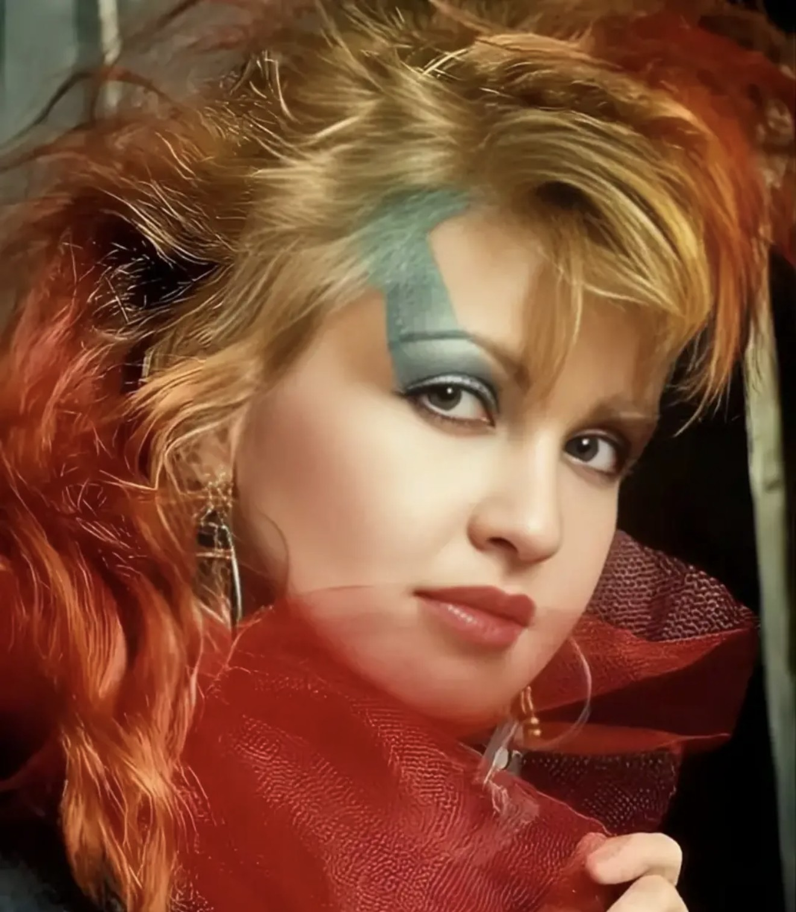
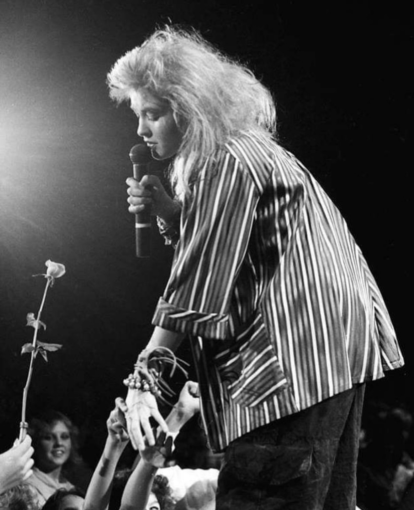

True Colors at 40: Cyndi Lauper's No. 1, four decades on
Forty years ago today, a quiet ballad knocked the big pop songs aside and went to No. 1 in America. It has never really left.

On 25 October 1986, “True Colors” reached No. 1 on the Billboard Hot 100. It stayed there for two weeks. Forty years later, it's one of those rare songs nearly everyone knows, even people who couldn't tell you who sang it first.
1986A song she didn't write
“True Colors” was the title track of Cyndi Lauper's second album, and the only song on that album she didn't write. It came from Billy Steinberg and Tom Kelly, the songwriting team behind Madonna's “Like a Virgin”. They had pitched it to the Canadian singer Anne Murray first. She turned it down, and Lauper connected with it straight away.
The soundWhisper first
The writers' demo was a more conventional ballad. Lauper stripped it back. “When I heard our demo, I realized it had intimacy, and intimacy was the most important thing,” she has said. Her version starts almost at a whisper, sparse and delicate, and builds slowly into something huge. Steinberg and Kelly later said they liked what she did with it even more than their own idea.
It was a bold move for an artist the world knew for the bright, bouncy “Girls Just Want to Have Fun”. It showed the voice could do quiet, too.

The life of a songCovered, sung, remembered
The song kept travelling. Phil Collins recorded his own version in 1998, and it has been covered and sung at countless moments since. Its message, that the people who love you see who you really are, is simple enough to fit almost any moment.

Forty years onStill on stage
Lauper has kept moving, too. In 2013 she became the first solo woman to win the Tony Award for Best Original Score, for the musical Kinky Boots. Her “Girls Just Wanna Have Fun” farewell tour ran 68 dates around the world in 2024 and 2025, including her first sold-out headline show at Madison Square Garden. In November 2025 she was inducted into the Rock & Roll Hall of Fame, and this year she played her first Las Vegas residency, at the Colosseum at Caesars Palace from 24 April to 2 May 2026.
Forty years after it went to No. 1, “True Colors” still does what it did in 1986: it makes a big room go quiet.
Sources
- Lifetime: October 25, 1986 — Cyndi Lauper's True Colors reaches No. 1
- Stereogum, The Number Ones: Cyndi Lauper's True Colors
- American Songwriter: True Colors turns 35
- Cyndi Lauper official site: 35th anniversary of True Colors
- Business Wire: Cyndi Lauper announces Las Vegas residency (Oct 2025)
- Live for Live Music: Cyndi Lauper 2026 Las Vegas residency